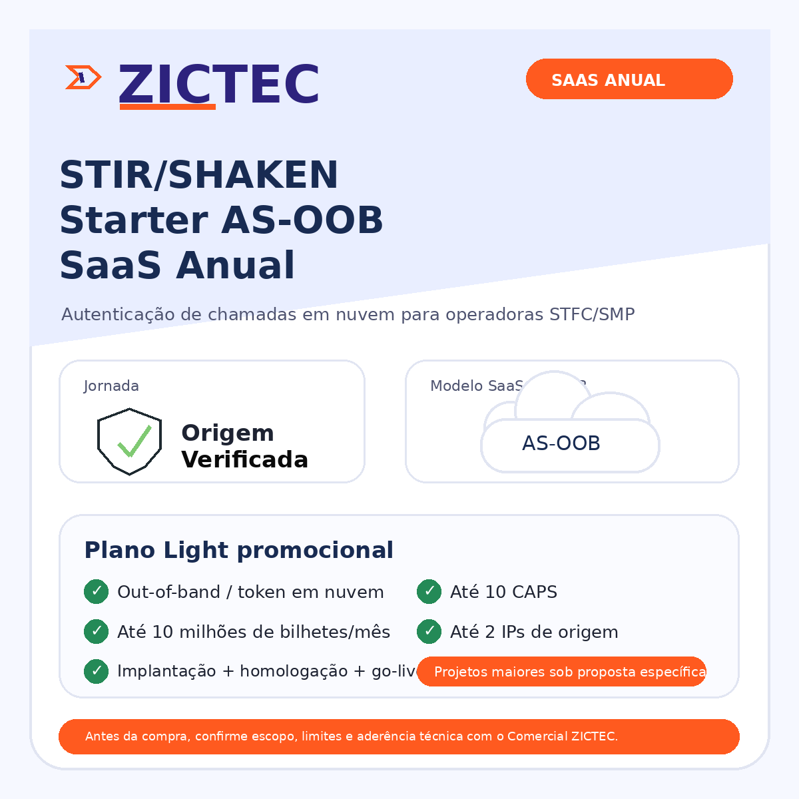
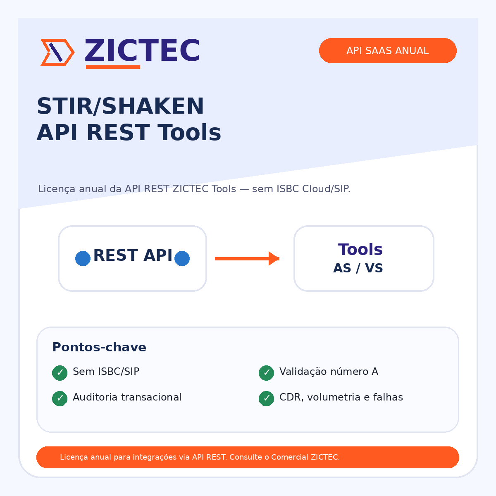
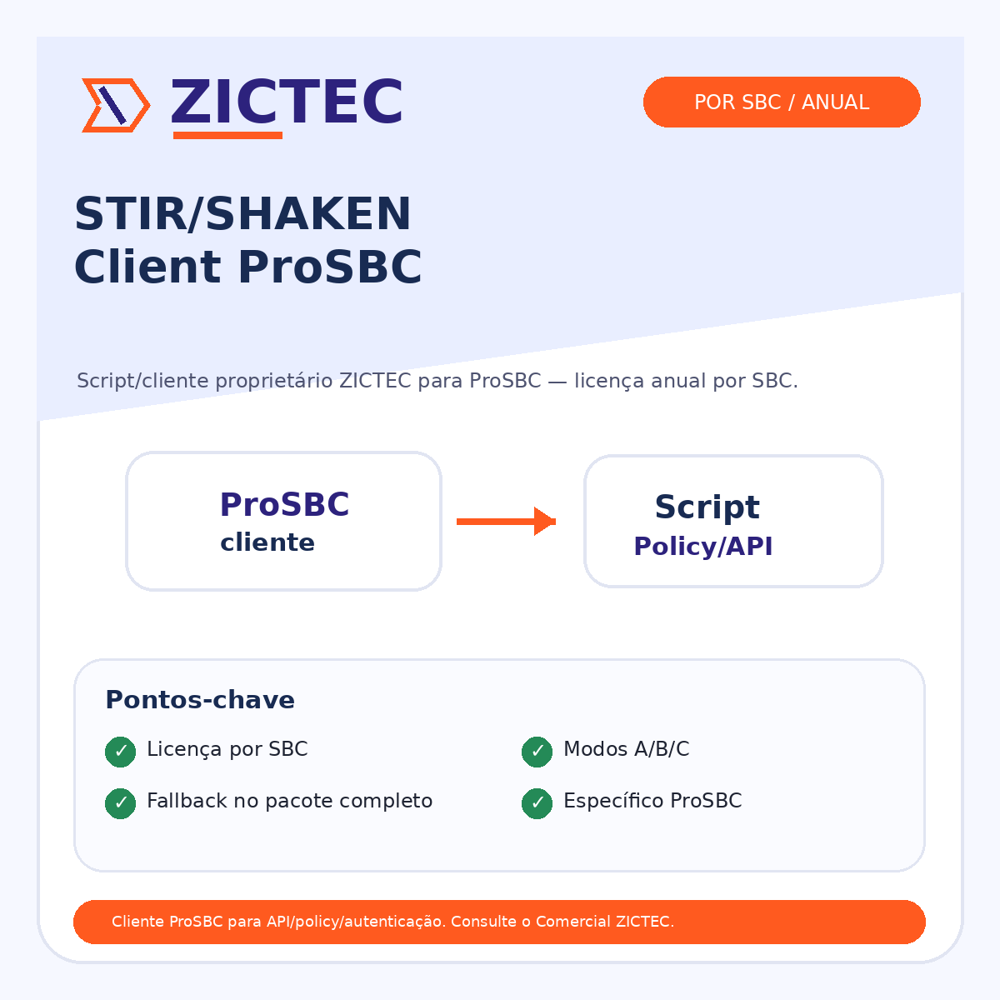
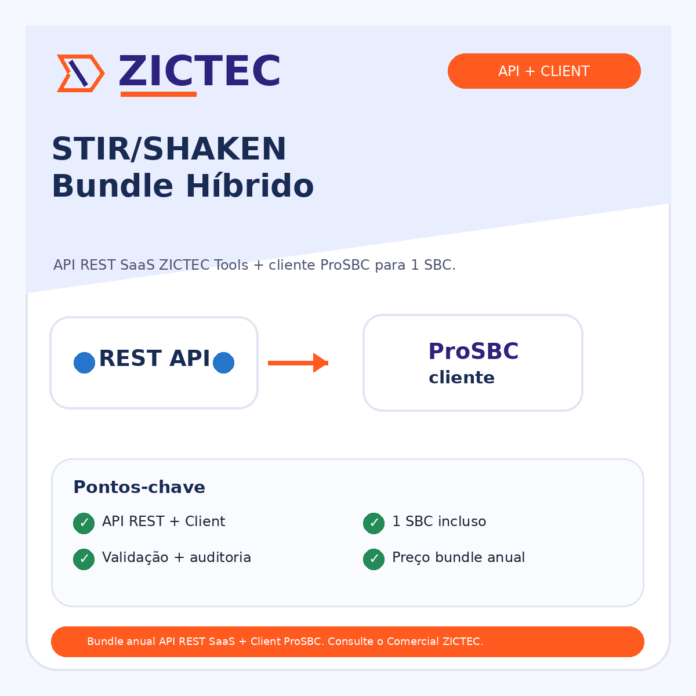

Menos risco na origem da chamada
Validação técnica, trilha de auditoria e critérios para reduzir uso indevido de números, falhas de autenticação e contestação.
Pacotes para operadoras, provedores, contact centers e operações de voz que precisam sair do conceito para implantação real: API, ProSBC, ISBC Cloud, homologação e go-live assistido.
Antes de discutir tecnologia, a página deixa claro o resultado de negócio e o caminho de contratação.
Validação técnica, trilha de auditoria e critérios para reduzir uso indevido de números, falhas de autenticação e contestação.
Separação entre ISBC Cloud, API REST, Client ProSBC, setup, licença, hardware e suporte para evitar compra incompleta.
Autenticação primeiro; identificação, marca e campanhas entram depois com dependências e premissas explícitas.
STIR/SHAKEN é a tecnologia; Autenticação, Identificação e Origem Verificada são etapas diferentes da jornada de confiança da chamada.
Protocolo/tecnologia usado para dar confiabilidade à origem da chamada por meio de assinatura, validação e regras técnicas da cadeia de interconexão.
É realizar o envio das chamadas nas interconexões autenticadas conforme regras da Anatel e do ecossistema operacional da ABR Telecom.
No Brasil, é implantado pela Anatel sob o nome comercial Origem Verificada. É a camada que exibe marca/logo e se vincula a campanhas.
A Identificação depende de Autenticação. Primeiro a chamada precisa ser autenticável/confiável; depois pode receber camada de marca/campanha.
Terminologia: usar ABR Telecom como referência institucional e operacional, não “BR”. Site institucional: www.abrtelecom.com.br.
Agora a jornada separa claramente o que é ISBC Cloud/SIP, API REST, cliente ProSBC, bundle híbrido e pacotes fechados com setup/licença/hardware. Isso evita vender SaaS completo quando o cliente precisa apenas da API, ou deixar dependências obrigatórias fora da proposta.

Inclui ISBC Cloud para suporte SIP e consumo da API ZICTEC.

Licença anual da API usada diretamente por SBCs/softswitches, sem ISBC Cloud.

Script/cliente proprietário instalado no ProSBC, licenciado por SBC.

Combina API REST SaaS ZICTEC Tools + cliente ProSBC para 1 SBC.
Regra de escopo: API REST não é ISBC Cloud; Client ProSBC não é licença da API SaaS; Bundle híbrido combina os dois; Starter AS-OOB SaaS inclui ISBC Cloud para SIP. Outros vendors podem exigir homologação e ter limitações por documentação, API, licenciamento ou política do fornecedor.
Reduzir a negociação desgastante criando trilhas claras: setup pontual, SaaS com ISBC, API direta, Client ProSBC, bundle híbrido e pacotes completos que já agrupam dependências obrigatórias.
É serviço de implantação/homologação. Para usar a solução ZICTEC com ProSBC, deve ser combinado com a licença do script/cliente — item D.
Para quem precisa de ISBC Cloud para SIP consumindo a API ZICTEC.
Promo: isenção de SETUPPara integrar SBCs/softswitches diretamente à API ZICTEC, sem SIP/ISBC.
Licença do script/cliente por SBC. Não inclui setup; no primeiro SBC normalmente combina com o item A.
Pacote fechado para evitar compra incompleta: implantação/homologação/produção com ABR + primeiro ano da licença Client STI-AS para 1 SBC.
30% off · R$ 18.400,04Variação completa para cliente que precisa sair com servidor, licença básica ProSBC de 500 sessões e o escopo do ZT_STIAS_PROSBC_SETUP_CLIENT_A, sem esquecer dependências.
Regra comercial de setup: o item A é serviço, não licença. Para utilizar a solução ZICTEC em ProSBC, combine A + D no primeiro SBC ou use o SKU ZT_STIAS_PROSBC_SETUP_CLIENT_A, que já une SETUP + Client ProSBC 1 ano com desconto promocional. Depois, o 2º ano renova apenas a licença Client ProSBC. Instalação de SBC novo adicional pode ter taxa de setup/Professional Services conforme escopo. O item B tem bonificação promocional de isenção de setup; o item C também quando usado em ProSBC já existente com contrato de suporte, mas pode exigir A se for ambiente diferente do homologado.
O ecommerce deve funcionar como contratação guiada, não como compra cega de implantação complexa.
Explicar Autenticação vs Identificação, papel do STIR/SHAKEN e por que Origem Verificada depende de autenticação.
Cumprir regulação, operar com suporte, manter ProSBC atual, modernizar topologia ou ativar campanhas.
SBC/vendor, rotas, volumetria, status ABR, necessidade de relatórios, campanhas e suporte.
Start, Operate, Hybrid ou Modernize com add-ons opcionais.
Compra inicia validação/kickoff; ambientes complexos viram proposta formal.
Responda o mínimo necessário para recomendar uma trilha, gerar briefing de pré-venda e reduzir idas e vindas com o cliente.
Material para transformar uma conversa comercial em briefing técnico utilizável pela operação.
Para o comercial responder rápido sem transformar toda conversa em engenharia consultiva.
| Sinal do cliente | Oferta sugerida | Próximo passo |
|---|---|---|
| “Só preciso implantar/homologar o primeiro SBC” | ZT_STIAS_PROSBC_SETUP_CLIENT_A · SETUP + Client ProSBC 1 ano | Evita compra incompleta; 30% de desconto sobre setup + client; 2º ano renova só a licença Client ProSBC |
| “Preciso de SIP/ISBC Cloud” | Starter AS-OOB SaaS (B) | Validar limites Light; setup promocionalmente isento |
| “Tenho ProSBC suportado e quero consumir API” | API REST ZICTEC Tools (C) | Setup isento se for ambiente já homologado/com suporte; caso contrário, avaliar A |
| “Tenho mais SBCs ProSBC já existentes” | Licenças Client ProSBC adicionais (D) | SBC adicional já existente paga apenas licença; SBC novo pode exigir setup/PS |
| “Não tenho ProSBC pronto / preciso comprar tudo funcional” | ZT_PROSBC_HW500_STIAS_SETUP_CLIENT_A · Server + 500 sessões + SETUP + Client | Inclui hardware, licença básica ProSBC de 500 sessões e o escopo do ZT_STIAS_PROSBC_SETUP_CLIENT_A |
| “Quero ProSBC completo + API no mesmo primeiro ano” | ZT_PROSBC_HW500_STIAS_HYBRID_API_A · Server + 500 sessões + Client + API Tools | Usar link/cupom hybrid7800 quando aplicável; preço final R$ 49.464,44 e renovação referenciada pelo bundle híbrido anual |
| “Quero logo/nome na chamada” | Add-on Campanhas / Origem Verificada | Confirmar autenticação e processo de backoffice |
| “Quero direto na ABR” | CAPEX/Direto com ressalvas | Alertar menor visibilidade operacional ZICTEC |
Catálogo alinhado ao novo ecossistema: setup, SaaS com ISBC Cloud, API REST, Client ProSBC, bundle híbrido e itens complementares de suporte/licença/hardware.
ID 109 · SAAS_STIAS_OOB_A
R$ 39.000,00
Ver no shopID 295 · ZT_STIAS_API_A
R$ 31.200,00
Ver no shopID 297 · ZT_STIAS_PROSBC_CLIENT_A
R$ 12.000,00
Ver no shopID 299 · ZT_STIAS_HYBRID_BUNDLE_A
R$ 39.000,00
Ver no shopID 99 · ZTSHAKENDEPLOY
R$ 14.285,78
Ver no shopSKU: ZT_STIAS_PROSBC_SETUP_CLIENT_A · composição técnica: ZTSHAKENDEPLOY + ZT_STIAS_PROSBC_CLIENT_A
R$ 26.285,78R$ 18.400,04 30% off · clientes com contrato: até 12x sem juros no boleto
Ver SKU no shopSKU: ZT_PROSBC_HW500_STIAS_SETUP_CLIENT_A · servidor físico incluso
R$ 41.750,18R$ 33.864,44 Inclui desconto do SKU base; suporte operacional não incluso
Ver SKU no shopSKU: ZT_PROSBC_HW500_STIAS_HYBRID_API_A · servidor físico incluso
R$ 80.750,18R$ 49.464,44 Preço com cupom automático hybrid7800 · 1º ano
Ver SKU no shopID 192 · ZTPSBCSUP95A
R$ 30.000,00
Ver no shopID 259 · SKU pendente
R$ 29.750,18
Ver no shopID 271 · ZTSUP_BH_PONTUAL_5H
R$ 4.500,00
Ver no shopLeitura rápida: se o cliente precisa de SIP, olhar Starter AS-OOB SaaS; se quer consumo direto, API REST; se o ponto de integração é ProSBC, Client por SBC; se quer evitar compra incompleta no primeiro SBC, usar o pacote SETUP + Client; se precisa ambiente funcional novo, usar Server + 500 sessões + SETUP + Client. SETUP é serviço de implantação/homologação, pago uma vez para o primeiro SBC e combinado com a licença quando a solução ZICTEC roda no ProSBC.
Os cards agora ficam agrupados por família comercial: primeiro a referência anual/sem servidor, logo abaixo ou ao lado a variação com SERVIDOR FÍSICO INCLUSO. Assim o cliente entende compra inicial, renovação e diferença entre REST direto, SIP via ISBC e ProSBC com client local.
Ambos entregam acesso à solução ZICTEC Tools com integração, auditoria, relatórios, API/validação e trilha operacional. A diferença é o canal de integração: REST direto em cliente compatível ou SIP por ISBC compartilhado.
Licença anual do Tools/relatórios/API que fornece a solução ZICTEC via API REST para clientes compatíveis, sem ISBC Cloud/SIP.
R$ 31.200,00licença anual Tools/API
Mesma camada Tools/relatórios/auditoria, adicionando ISBC Cloud compartilhado para quando o cliente precisa consumir a solução via SIP.
R$ 39.000,00setup isento na promoção
Família para cliente ProSBC em que a solução roda no SBC com client/script local. Estes pacotes têm setup e Client STI-AS no ProSBC, mas não incluem acesso ao Tools/relatórios/API ZICTEC.
Pacote para realizar o setup e o primeiro ano de licença do Client STI-AS para 1 SBC ProSBC já existente.
R$ 18.400,04R$ 26.285,7830% de desconto
Variação do ZT_STIAS_PROSBC_SETUP_CLIENT_A para cliente que também precisa sair com servidor ProSBC físico e licença básica de 500 sessões.
R$ 33.864,44R$ 41.750,18inclui desconto do SKU base
Família que combina Client ProSBC com Tools/relatórios/API ZICTEC. O bundle anual sem servidor serve como referência recorrente/renovação e não inclui setup; o SKU ZT_PROSBC_HW500_STIAS_HYBRID_API_A é o primeiro ano completo com servidor físico, setup, Client e API Tools.
Bundle anual de referência para operação/renovação: API REST SaaS ZICTEC Tools + Client ProSBC para 1 SBC, sem servidor e sem setup.
R$ 39.000,00licença/bundle anual
Conectado ao ZT_STIAS_HYBRID_BUNDLE_A: adiciona servidor físico, 500 sessões e setup para o primeiro ano completo.
R$ 49.464,44R$ 80.750,18com cupom hybrid7800 de R$ 7.800,00
Serviço de implantação/homologação usado quando o cliente precisa contratar setup separadamente. Não é licença, não é API/Tools e não substitui Client ProSBC.
Serviço de implantação/homologação. Para usar a solução ZICTEC em ProSBC, combine com a licença Client ProSBC ou use um dos pacotes acima.
R$ 14.285,78pago uma vez no primeiro SBC
Ambiente simples, escopo claro, responsável técnico definido e premissas aceitas.
Outro vendor, status ABR incerto, rotas complexas ou dúvida entre IN-BAND/OUT-OF-BAND.
Modernização de topologia, hardware, alta volumetria, múltiplas interconexões ou SLA dedicado.
Origem Verificada, logo/marca e campanhas entram depois que Autenticação estiver encaminhada.
Nota de segurança comercial: o ecommerce deve reduzir fricção, não prometer implantação automática universal. API REST Tools e SaaS AS-OOB entregam a solução ZICTEC Tools por canais diferentes; o SKU ZT_STIAS_PROSBC_SETUP_CLIENT_A tem setup/client local, mas não inclui Tools/relatórios; pacotes com servidor físico são variações vinculadas aos itens sem servidor e devem deixar claro o que renova no 2º ano.
Respostas curtas para a equipe usar em reunião, WhatsApp ou proposta.
Não. STIR/SHAKEN é protocolo/tecnologia. Origem Verificada é a camada brasileira de identificação/branded call, ligada a marca/logo/campanhas, e depende de Autenticação.
Não. Autenticação é enviar chamadas nas interconexões autenticadas conforme regras da Anatel. Identificação é exibir marca/logo/finalidade — Branded Call/Origem Verificada.
Não obrigatoriamente. Novo SBC é recomendação quando há limitação de capacidade, topologia antiga, necessidade de redundância ou projeto de modernização.
O Starter AS-OOB SaaS inclui ISBC Cloud para suporte SIP. A API REST Tools é apenas a licença anual da API ZICTEC, sem ISBC/SIP, para consumo direto por SBCs, softswitches ou clientes homologados.
Quando a integração deve rodar no ProSBC. O client/script é proprietário da ZICTEC, licenciado por SBC, e pode operar nos modos completo via SaaS, validação/policy + autenticação direta ABR ou sem SaaS ZICTEC, conforme escopo contratado. A licença não inclui setup: no primeiro SBC normalmente combina com o item A; SBCs adicionais já existentes pagam apenas licença.
O SETUP STIR/SHAKEN é pago apenas uma vez para o primeiro SBC quando contratado como serviço A. O modo SaaS B possui bonificação promocional de isenção de setup. A API C também pode ter setup isento quando usada em ProSBC já existente com contrato de suporte; se for ambiente diferente do homologado, pode exigir setup A a negociar. Instalação de SBC novo adicional pode ter taxa de setup/Professional Services conforme contrato.
Porque o SETUP normal não inclui a licença, e a licença Client ProSBC não inclui implantação/homologação/produção com ABR. O SKU ZT_STIAS_PROSBC_SETUP_CLIENT_A une setup + Client ProSBC para o primeiro SBC, com valor promocional de R$ 18.400,04 sobre original de R$ 26.285,78. Para o 2º ano, renova-se apenas a licença Client ProSBC. Clientes com contratos vigentes podem comprar no boleto em até 12x sem juros; isso equivale a uma mensalidade financeira, mas continua sendo parcelamento.
Quando o cliente ainda precisa da base ProSBC funcional: servidor PROSBC HW-SRV-MID R420 STD WO LIC, licença básica de 500 sessões e ZT_STIAS_PROSBC_SETUP_CLIENT_A. Ele reduz o risco de o cliente comprar STIR/SHAKEN e esquecer hardware ou licenciamento mínimo ProSBC. Suporte operacional, transcoding, expansões e outros itens continuam fora do escopo salvo contratação separada.
Quando o cliente quer uma entrega de primeiro ano mais completa: servidor ProSBC, 500 sessões, SETUP, Client STI-AS e API REST ZICTEC Tools no mesmo pacote. O link promocional aplica o cupom hybrid7800 automaticamente e leva o valor para R$ 49.464,44; renovações do 2º ano devem ser tratadas separadamente conforme licenças e serviços recorrentes.
Porque preserva validação de número A, trilha de auditoria, relatórios, volumetria, falhas e capacidade de troubleshooting. Também ajuda a evitar autenticação de números de terceiros ou inválidos que podem gerar questionamentos/contestações/bloqueios.
Não deve prometer isso. A compra inicia contratação/validação; produção depende de ambiente, rotas, credenciais, homologação e aceite.
Criar formulário de checklist, páginas de pacote no shop, templates de proposta e roteiro comercial para cada trilha.